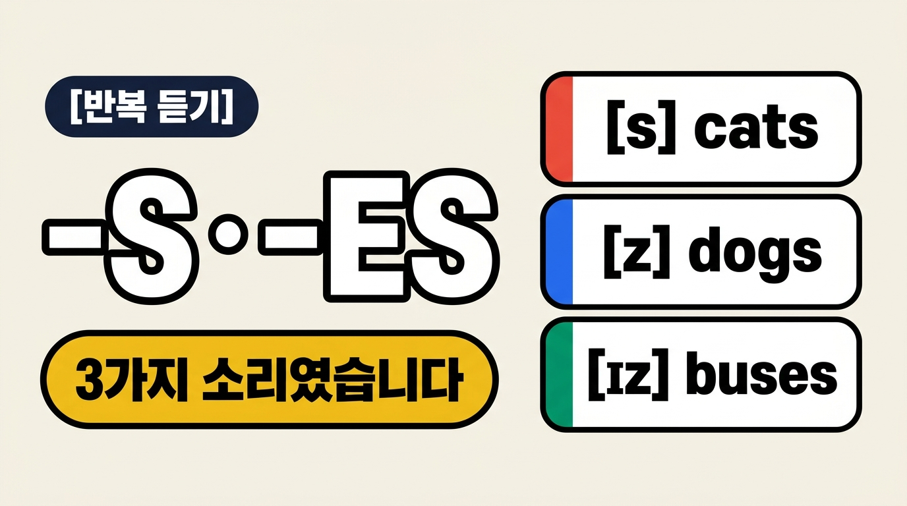
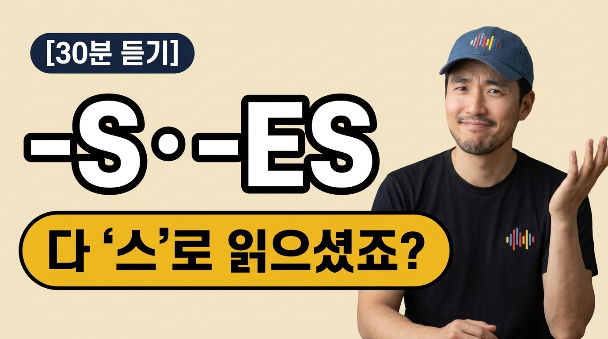
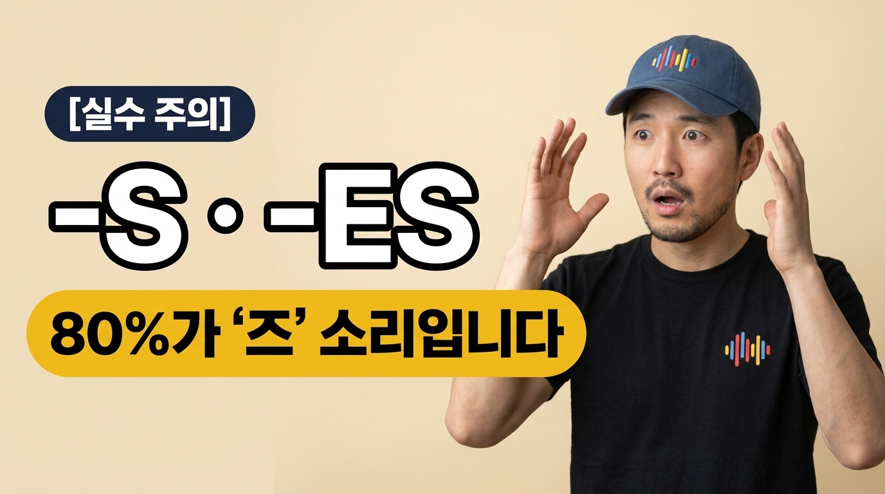
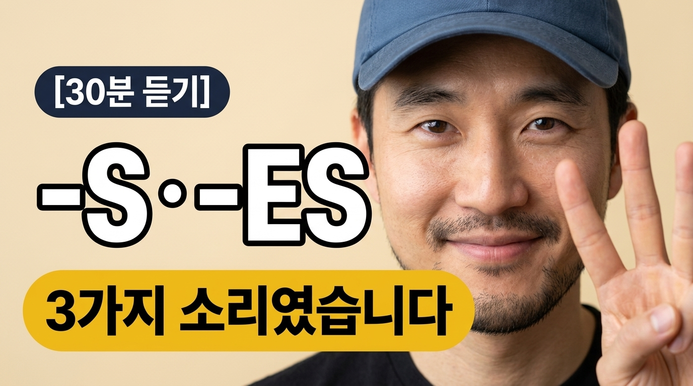

EP27 업로드 패키지
영어 -S 끝소리 3가지, 이것만 알면 귀가 뚫립니다 | 24단어 반복 듣기
영상 파일: English_Pronunciation_S_Ending_3_Rules_Listening_Drill.mp4
업로드 체크리스트
[EP27 유튜브 업로드 체크리스트]
영상: English_Pronunciation_S_Ending_3_Rules_Listening_Drill.mp4 (8분 20초)
⚠️ 올리기 전에 먼저 할 일
1. 썸네일은 반드시 새로 만드세요. 옛 시안에는 영상 길이와 다른 [30분 듣기]가 박혀 있습니다.
videos/ep27-s-ending/prompts/thumbnail-prompts.md로 새로 만들어 같은 파일 이름으로 바꿔 넣으세요.
자동 업로드를 쓰면 교체한 뒤 대시보드 대기 큐에서 "이 썸네일 승인"을 눌러야 올라갑니다.
2. 영상 안 금지어는 다시 렌더링하지 않고 그대로 올리기로 했습니다 (2026-11-06). 남은 항목은 아래와 같습니다.
화면: 유성음 62곳, 쿠션 모음 47곳, 무성음 46곳, 치찰음 9곳, 조음 5곳, 물리법칙 3곳
음성: "유성음" 3번, "물리법칙" 2번, "무성음" 1번, "치찰음" 1번 (받아쓰기 기준, "쿠션 모음"은 대본에 2번)
□ 1. 영상 파일 업로드
□ 2. 제목: title.txt 복사. 테스트를 쓰면 아래 세트대로 등록
A안 메인 · thumbnail.jpg와 세트
B안 상식 뒤집기 · thumbnail-variant-a.jpg와 세트
C안 호기심형 · thumbnail-variant-b.jpg와 세트
□ 3. 설명: description.txt 복사 (챕터 포함)
□ 4. 태그: tags.txt 복사
□ 5. 고정 댓글: pinned-comment.txt 복사 후 첫 댓글로 등록하고 고정
□ 6. 최종 화면: 마지막 10초 (8:09부터), 추천 영상 + 구독 버튼
화면에 그려진 네모와 카드는 눌리지 않는 그림입니다. 스튜디오 최종 화면에서 같은 자리에 요소를 직접 얹으세요.
추천 영상: 화면에 적힌 대로 EP22 https://youtu.be/bPTAnjMT7xc (이미 공개됨)
□ 7. 재생목록: "[이해하면 쉬운영어] 반복 듣기 정주행"에 추가. 이 재생목록은 아직 채널에 없으니 처음 한 번 만드세요.
□ 8. 자막: 아직 없습니다. subtitles/ 폴더를 만든 뒤 따로 올립니다.
□ 9. 시청자층: 아동용 아님
□ 10. AI 사용 표시: 예 (실사처럼 보이는 AI 배경 영상이 있음. 표시해도 노출과 수익에 불이익이 없다고 유튜브가 안내함)
썸네일




메인 제목
영어 -S 끝소리 3가지, 이것만 알면 귀가 뚫립니다 | 24단어 반복 듣기
제목 시안 (제목 및 썸네일 테스트용)
A안 · 메인 · thumbnail.jpg와 세트
영어 -S 끝소리 3가지, 이것만 알면 귀가 뚫립니다 | 24단어 반복 듣기
B안 · 상식 뒤집기 · thumbnail-variant-a.jpg와 세트
단어 끝 S, 전부 '스'로 읽으셨죠? 끝소리 3가지 | 영어 S 발음 24단어
C안 · 호기심형 · thumbnail-variant-b.jpg와 세트
Houses가 왜 '하우지즈'일까? -S 끝소리 3가지 | 영어 S 발음 24단어
설명
학창 시절에 복수형이나 3인칭 단수에 붙은 S는 그냥 '스'로 읽으면 된다고 배우셨죠? 그런데 미드를 들어보면 dogs는 '독스'가 아니라 끝이 '즈'에 가깝게 들립니다. houses는 아예 '하우지즈'가 됩니다. 단어 끝 -S와 -ES는 바로 앞 소리에 따라 딱 3가지로 갈립니다. 24단어를 남녀 목소리로 번갈아 반복해서 들으면서 귀로 익혀보세요. 🎧 ⏱️ 챕터 00:00 -S, 다 '스'로 읽으셨죠? 3가지 끝소리 차이 (도입부) 00:29 끝소리가 갈리는 원리 ([s] vs [z] vs [ɪz]) 01:16 Group 1: [s] 성대 떨림 0% 6단어 (cats, cups, books, laughs...) 02:10 Group 2: [z] 성대 떨림 100% 6단어 (dogs, plays, pens, calls...) 03:02 Group 3: [ɪz] 혀 꼬임 방지 쿠션 6단어 (bu · ses, wat · ches, box · es...) 03:54 Group 4: 예외 & 자주 쓰는 말 6단어 (hou · ses, pri · zes, is...) 04:44 문장 속에서 듣기 7문장 05:09 24단어 무작위 섞어 듣기 (실전 퀴즈) 07:10 스마트폰 캡처용 1장 요약 치트시트 07:36 24단어 앵콜 총복습 & 다음 영상 추천 ━━━━━━━━━━━━━━━━━━━ 💡 -S · -ES 소리 3가지 ① [s]: 성대가 떨리지 않는 소리 뒤에서는 똑같이 안 떨리는 [s] (cats, cups, books, laughs, stops, sleeps) ② [z]: 성대가 울리는 소리 뒤에서는 부드러운 [z] (dogs, plays, pens, calls, loves, dreams) ③ [ɪz]: 이미 바람 소리가 나는 단어 뒤에서는 혀가 꼬이지 않게 소리를 하나 더 넣은 [ɪz] (bu · ses, wat · ches, box · es, clas · ses) ★ 따로 기억할 것: hou · ses는 앞소리까지 바뀌어 [haʊzɪz]로 읽습니다. is [ɪz], was [wɑːz], has [hæz], does [dʌz]도 끝이 '즈' 소리입니다. ━━━━━━━━━━━━━━━━━━━ 📌 이렇게 들어보세요 단어만 보지 마시고, 04:44부터 나오는 문장 7개와 05:09부터 나오는 24단어 섞어 듣기로 귀가 먼저 반응할 때까지 들어보세요. #영어발음 #S발음 #복수형발음 #영어듣기 #영어리스닝 #영어회화 #기초영어 #파닉스 #이해하면쉬운영어
고정 댓글
오늘도 24단어 -S · -ES 끝소리 훈련을 끝까지 완주하신 여러분, 정말 고생하셨습니다! 👏 💬 여러분은 그동안 24개 단어 중 어떤 단어의 S 발음이 가장 헷갈리셨나요? (예: dogs를 독스로 알고 계셨나요? 아니면 houses가 하우지즈로 변하는 게 신기하셨나요?) 댓글로 남겨주시면 발음 교정 팁을 함께 나눠드리겠습니다! 📱 07:10 요약 치트시트는 스마트폰에 캡처해 두고 틈날 때마다 꺼내보세요! 구독과 좋아요는 다음 유익한 발음 영상 제작에 큰 힘이 됩니다. ❤️
태그
영어발음, S발음, 영어복수형, 3인칭단수, 영어리스닝, 영어듣기, 영어회화, 기초영어, 파닉스, 발음규칙, 영어공부, 원어민발음, 이해하면쉬운영어, English pronunciation, s ending pronunciation, plural s
챕터
00:00 -S, 다 '스'로 읽으셨죠? 3가지 끝소리 차이 (도입부) 00:29 끝소리가 갈리는 원리 ([s] vs [z] vs [ɪz]) 01:16 Group 1: [s] 성대 떨림 0% 6단어 (cats, cups, books, laughs...) 02:10 Group 2: [z] 성대 떨림 100% 6단어 (dogs, plays, pens, calls...) 03:02 Group 3: [ɪz] 혀 꼬임 방지 쿠션 6단어 (bu · ses, wat · ches, box · es...) 03:54 Group 4: 예외 & 자주 쓰는 말 6단어 (hou · ses, pri · zes, is...) 04:44 문장 속에서 듣기 7문장 05:09 24단어 무작위 섞어 듣기 (실전 퀴즈) 07:10 스마트폰 캡처용 1장 요약 치트시트 07:36 24단어 앵콜 총복습 & 다음 영상 추천